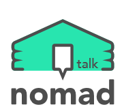

 개인정보 처리방침
본 nomad talk 앱은 고객님의 개인정보를 중요시하며, "정보통신망 이용촉진 및 정보보호"에 관한 법률을 준수하고 있습니다.
본 사이트는 개인정보취급방침을 통하여 고객님께서 제공하시는 개인정보가 어떠한 용도와 방식으로 이용되고 있으며, 개인정보보호를 위해 어떠한 조치가 취해지고 있는지 알려드립니다.
본 사이트는 개인정보취급방침을 개정하는 경우 앱을 통한 공지안내를 통하여 공지할 것입니다.
ο 본 방침은 : 2022년 9월 1일 부터 시행됩니다.
■ 수집하는 개인정보의 항목
본 nomad talk 앱은 회원가입을 위해 아래와 같은 개인정보를 수집하고 있습니다.
ο 수집항목 : 이메일
ο 개인정보 수집방법 : nomad talk 앱(facebook 연동 회원가입)
■ 개인정보의 수집 및 이용목적
본 nomad talk 앱은 수집한 개인정보를 다음의 목적을 위해 활용합니다.
ο 회원 관리
회원제 서비스 이용에 따른 본인확인 , 개인 식별 , 불량회원의 부정 이용 방지와 비인가 사용 방지 가입 의사 확인
■ 개인정보의 보유 및 기간
본 nomad talk 앱은 개인정보 수집 및 이용목적이 달성된 후에는 예외 없이 해당 정보를 지체 없이 파기합니다.
■ 개인정보의 파기 절차 및 방법
본 사이트는 원칙적으로 개인정보 수집 및 이용목적이 달성된 후에는 해당 정보를 지체없이 파기합니다. 파기절차 및 방법은 다음과 같습니다.
ο 파기절차
회원님이 회원가입 등을 위해 입력하신 정보는 목적이 달성된 후 별도의 DB로 옮겨져 내부 방침 및 기타 관련 법령에 의한 정보보호 사유에 따라(보유 및 이용기간 참조) 일정 기간 저장된 후 파기되어집니다. 별도 DB로 옮겨진 개인정보는 법률에 의한 경우가 아니고서는 보유되어지는 이외의 다른 목적으로 이용되지 않습니다.
ο 파기방법
- 전자적 파일형태로 저장된 개인정보는 기록을 재생할 수 없는 기술적 방법을 사용하여 삭제합니다.
■ 개인정보 제공
본 nomad talk 앱은 이용자의 개인정보를 원칙적으로 외부에 제공하지 않습니다. 다만, 아래의 경우에는 예외로 합니다.
- 법령의 규정에 의거하거나, 수사 목적으로 법령에 정해진 절차와 방법에 따라 수사기관의 요구가 있는 경우
■ 수집한 개인정보의 위탁
본 nomad talk 앱은 고객님의 동의없이 고객님의 정보를 외부 업체에 위탁하지 않습니다. 향후 그러한 필요가 생길 경우, 위탁 대상자와 위탁 업무 내용에 대해 고객님에게 통지하고 필요한 경우 사전 동의를 받도록 하겠습니다.
■ 이용자 및 법정대리인의 권리와 그 행사방법
이용자는 언제든지 등록되어 있는 자신의 개인정보를 조회하거나 수정할 수 있으며 가입해지를 요청할 수도 있습니다.
이용자의 개인정보 조회,수정을 위해서는 ‘개인정보변경’(또는 ‘회원정보수정’ 등)을 가입해지(동의철회)를 위해서는 “회원탈퇴”를 클릭하여 정정 또는 탈퇴가 가능합니다.
혹은 개인정보관리책임자에게 서면, 이메일로 연락하시면 지체없이 조치하겠습니다.
귀하가 개인정보의 오류에 대한 정정을 요청하신 경우에는 정정을 완료하기 전까지 당해 개인정보를 이용 또는 제공하지 않습니다.
또한 잘못된 개인정보를 제3자에게 이미 제공한 경우에는 정정 처리결과를 제3자에게 지체없이 통지하여 정정이 이루어지도록 하겠습니다.
본 nomad talk 앱은 이용자 혹은 법정 대리인의 요청에 의해 해지 또는 삭제된 개인정보는 본 nomad talk 앱이 수집하는 개인정보의 보유 및 이용기간”에 명시된 바에 따라 처리하고
그 외의 용도로 열람 또는 이용할 수 없도록 처리하고 있습니다.
■ 개인정보에 관한 민원서비스
귀하께서는 본 nomad talk 앱의 서비스를 이용하시며 발생하는 모든 개인정보보호 관련 민원을 개인정보관리책임자 혹은 담당부서로 신고하실 수 있습니다.
본 nomad talk 앱은 이용자들의 신고사항에 대해 신속하게 충분한 답변을 드릴 것입니다.